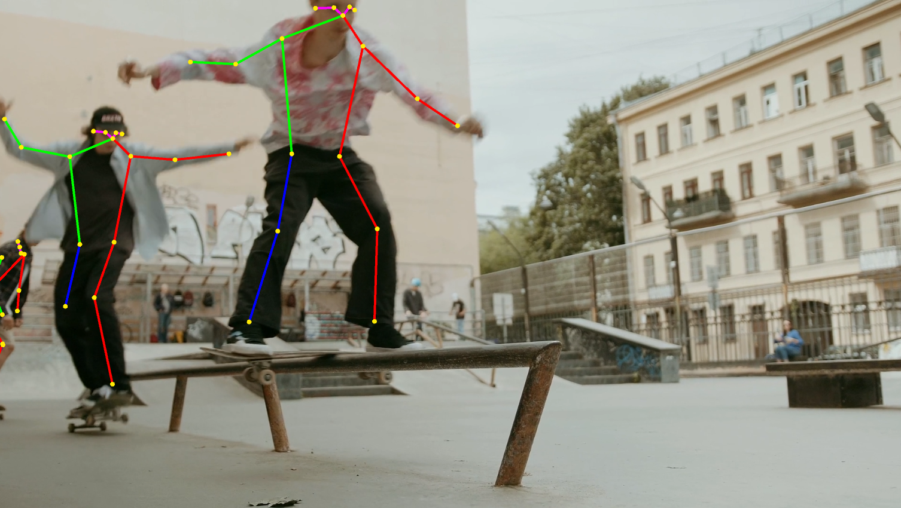
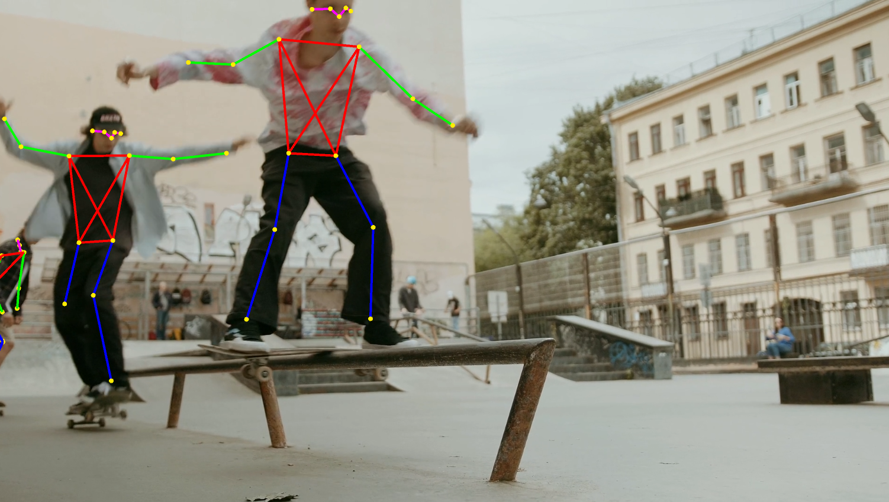

Barracuda PoseNet Tutorial 2nd Edition Pt. 7
Overview
In this post, we will cover how to create pose skeletons so that we can compare the estimated key point locations to the source video feed.
Create PoseSkeleton Script
We will implement the functionality for creating pose skeletons in a new script. Open the Scripts folder in the Assets section and create a new C# script called PoseSkeleton. The PoseSkeleton class will handle creating a single pose skeleton and updating the positions of its key points. We will be creating as many PoseSkeleton instances as is specified by the maxPoses variable in the PoseEstimator script.
Add Required Namespace
We need to add the System namespace as we will once again be using the Tuple class.
using System.Collections;
using System.Collections.Generic;
using UnityEngine;
using System;Remove MonoBehaviour Inheritance
The PoseSkeleton class does not need to be a MonoBehaviour so we can remove it.
public class PoseSkeletonAdd Variables
We will need a Transform array to keep track of the positions of the key point objects in the scene.
We also need a GameObject array to store the lines connecting the key point objects.
Next, we will create a static string array to store the names of the key points predicted by the model. The names will be ordered based on their key point id number (e.g. nose is in index 0).
The number of key point predicted by the model will not change, so we will store the number in a static int variable.
Much like the parentChildrenTuples variable in the Utils script, we will create a Tuple array to keep track of which key points should be connected by lines. We could actually just use the pairs from parentChildrenTuples, but the skeleton would look a bit weird.

Instead, we will make a pose skeleton that looks like this.

To help distinguish the different body areas, we will create a Color array so that we can specify what color we want each line to be.
Lastly, we need is a float variable to specify the line width for the pose skeleton lines.
// The list of key point GameObjects that make up the pose skeleton
public Transform[] keypoints;
// The GameObjects that contain data for the lines between key points
private GameObject[] lines;
// The names of the body parts that will be detected by the PoseNet model
private static string[] partNames = new string[]{
"nose", "leftEye", "rightEye", "leftEar", "rightEar", "leftShoulder",
"rightShoulder", "leftElbow", "rightElbow", "leftWrist", "rightWrist",
"leftHip", "rightHip", "leftKnee", "rightKnee", "leftAnkle", "rightAnkle"
};
private static int NUM_KEYPOINTS = partNames.Length;
// The pairs of key points that should be connected on a body
private Tuple<int, int>[] jointPairs = new Tuple<int, int>[]{
// Nose to Left Eye
Tuple.Create(0, 1),
// Nose to Right Eye
Tuple.Create(0, 2),
// Left Eye to Left Ear
Tuple.Create(1, 3),
// Right Eye to Right Ear
Tuple.Create(2, 4),
// Left Shoulder to Right Shoulder
Tuple.Create(5, 6),
// Left Shoulder to Left Hip
Tuple.Create(5, 11),
// Right Shoulder to Right Hip
Tuple.Create(6, 12),
// Left Shoulder to Right Hip
Tuple.Create(5, 12),
// Rigth Shoulder to Left Hip
Tuple.Create(6, 11),
// Left Hip to Right Hip
Tuple.Create(11, 12),
// Left Shoulder to Left Elbow
Tuple.Create(5, 7),
// Left Elbow to Left Wrist
Tuple.Create(7, 9),
// Right Shoulder to Right Elbow
Tuple.Create(6, 8),
// Right Elbow to Right Wrist
Tuple.Create(8, 10),
// Left Hip to Left Knee
Tuple.Create(11, 13),
// Left Knee to Left Ankle
Tuple.Create(13, 15),
// Right Hip to Right Knee
Tuple.Create(12, 14),
// Right Knee to Right Ankle
Tuple.Create(14, 16)
};
// Colors for the skeleton lines
private Color[] colors = new Color[] {
// Head
Color.magenta, Color.magenta, Color.magenta, Color.magenta,
// Torso
Color.red, Color.red, Color.red, Color.red, Color.red, Color.red,
// Arms
Color.green, Color.green, Color.green, Color.green,
// Legs
Color.blue, Color.blue, Color.blue, Color.blue
};
// The width for the skeleton lines
private float lineWidth;
// The material for the key point objects
private Material keypointMat;Create InitializeLine Method
The first method we will create will handle the initialization of a single line in the pose skeleton.
Method Steps
- Get the starting and ending joint pair indices to indicate what two key point are being connected
- Use the names of the two key points to create the name for the line object
- Create a new standard
GameObject - Add a
LineRenderercomponent to the newGameObject - Create a new
Materialfor the line with the appropriate color from theColorarray - Indicate that the line with only have two points
- Set the line width
/// <summary>
/// Create a line between the key point specified by the start and end point indices
/// </summary>
/// <param name="pairIndex"></param>
/// <param name="startIndex"></param>
/// <param name="endIndex"></param>
/// <param name="width"></param>
/// <param name="color"></param>
private void InitializeLine(int pairIndex, float width, Color color)
{
int startIndex = jointPairs[pairIndex].Item1;
int endIndex = jointPairs[pairIndex].Item2;
// Create new line GameObject
string name = $"{keypoints[startIndex].name}_to_{keypoints[endIndex].name}";
lines[pairIndex] = new GameObject(name);
// Add LineRenderer component
LineRenderer lineRenderer = lines[pairIndex].AddComponent<LineRenderer>();
// Make LineRenderer Shader Unlit
lineRenderer.material = new Material(Shader.Find("Unlit/Color"));
// Set the material color
lineRenderer.material.color = color;
// The line will consist of two points
lineRenderer.positionCount = 2;
// Set the width from the start point
lineRenderer.startWidth = width;
// Set the width from the end point
lineRenderer.endWidth = width;
}Create InitializeSkeleton Method
We will call the InitializeLine method for each joint pair in jointPairs.
/// <summary>
/// Initialize the pose skeleton
/// </summary>
private void InitializeSkeleton()
{
for (int i = 0; i < jointPairs.Length; i++)
{
InitializeLine(i, lineWidth, colors[i]);
}
}Create Constructor
Now we can define the class constructor that will initialize the pose skeleton.
Method Steps
- Initialize the
keypointsarray - Create a new material for the key point objects
- Create a new
GameObjectfor each key point- Create a sphere
GameObject - Set the position to the origin
- Set the size of the
GameObjectusing the providedpointScalevalue - Assign the new material
- Set the name for the object
- Create a sphere
- Set the
lineWidthvalue - Initialize the
linesarray - Call the the
InitializeSkeletonmethod
public PoseSkeleton(float pointScale = 10f, float lineWidth = 5f)
{
this.keypoints = new Transform[NUM_KEYPOINTS];
Material keypointMat = new Material(Shader.Find("Unlit/Color"));
keypointMat.color = Color.yellow;
for (int i = 0; i < NUM_KEYPOINTS; i++)
{
this.keypoints[i] = GameObject.CreatePrimitive(PrimitiveType.Sphere).transform;
this.keypoints[i].position = new Vector3(0, 0, 0);
this.keypoints[i].localScale = new Vector3(pointScale, pointScale, 0);
this.keypoints[i].gameObject.GetComponent<MeshRenderer>().material = keypointMat;
this.keypoints[i].gameObject.name = partNames[i];
}
this.lineWidth = lineWidth;
// The number of joint pairs
int numPairs = keypoints.Length + 1;
// Initialize the lines array
lines = new GameObject[numPairs];
// Initialize the pose skeleton
InitializeSkeleton();
}Create ToggleSkeleton Method
Just because we initialize a given number of pose skeletons based on the value for maxPoses does not mean that the model will find that many poses in an input image. We will need to hide the excess skeletons when they are not needed. We will hide the skeletons by deactivating the associated key point and line objects. We can use the same function to unhide the skeleton when it is needed. This method will be called from the PoseEstimator script, so it needs to be public.
/// <summary>
/// Toggles visibility for the skeleton
/// </summary>
/// <param name="show"></param>
public void ToggleSkeleton(bool show)
{
for (int i= 0; i < jointPairs.Length; i++)
{
lines[i].SetActive(show);
keypoints[jointPairs[i].Item1].gameObject.SetActive(show);
keypoints[jointPairs[i].Item2].gameObject.SetActive(show);
}
}Create Cleanup Method
When we reduce the max number of poses to estimate, we should remove the skeletons that are no longer needed. This method is nearly identical to the ToggleSkeleton except that we will be destroying the objects rather than deactivating them.
/// <summary>
/// Clean up skeleton GameObjects
/// </summary>
public void Cleanup()
{
for (int i = 0; i < jointPairs.Length; i++)
{
GameObject.Destroy(lines[i]);
GameObject.Destroy(keypoints[jointPairs[i].Item1].gameObject);
GameObject.Destroy(keypoints[jointPairs[i].Item2].gameObject);
}
}Create UpdateKeyPointPositions Method
We will update the key point positions with the latest model output in a new method called UpdateKeyPointPositions.
This method will take in the following as input:
Keypointarray for a single pose- The scale value to scale the key point positions from the input resolution to the source resolution
- The source
RenderTexture - A
boolto indicate whether to mirror the key point positions when using a webcam - A
floatvalue to indicate the minimum confidence score a key point needs to have to be displayed
Method Steps
- Iterate through the
Keypointarray - Hide the key point objects that do not meet the minimum confidence score
- Scale the key point positions from the input resolution up to the source resolution
- Flip the
Yaxis coordinates vertically to compensate for the difference between heatmap indices and scene coordinates - Mirror the
Xaxis coordinates if using a webcam - Update the key point object positions with the new coordinate values
/// <summary>
/// Update the positions for the key point GameObjects
/// </summary>
/// <param name="keypoints"></param>
/// <param name="sourceScale"></param>
/// <param name="sourceTexture"></param>
/// <param name="mirrorImage"></param>
/// <param name="minConfidence"></param>
public void UpdateKeyPointPositions(Utils.Keypoint[] keypoints,
float sourceScale, RenderTexture sourceTexture, bool mirrorImage, float minConfidence)
{
// Iterate through the key points
for (int k = 0; k < keypoints.Length; k++)
{
// Check if the current confidence value meets the confidence threshold
if (keypoints[k].score >= minConfidence / 100f)
{
// Activate the current key point GameObject
this.keypoints[k].GetComponent<MeshRenderer>().enabled = true;
}
else
{
// Deactivate the current key point GameObject
this.keypoints[k].GetComponent<MeshRenderer>().enabled = false;
}
// Scale the keypoint position to the original resolution
Vector2 coords = keypoints[k].position * sourceScale;
// Flip the keypoint position vertically
coords.y = sourceTexture.height - coords.y;
// Mirror the x position if using a webcam
if (mirrorImage) coords.x = sourceTexture.width - coords.x;
// Update the current key point location
// Set the z value to -1f to place it in front of the video screen
this.keypoints[k].position = new Vector3(coords.x, coords.y, -1f);
}
}Create UpdateLines Method
Once we have update the positions of the key point objects in the scene, we need to update the starting and ending coordinates for the skeleton lines. We will do so in a new method called UpdateLines.
Method Steps
- Get references to the starting and ending key point objects
- Check if both the starting and ending key point objects are visible
- If true
- Make the line object active
- Update the starting position for the line
- Update the ending positions for the line
- if false, deactivate the line object
- If true
/// <summary>
/// Draw the pose skeleton based on the latest location data
/// </summary>
public void UpdateLines()
{
// Iterate through the joint pairs
for (int i = 0; i < jointPairs.Length; i++)
{
// Set the GameObject for the starting key point
Transform startingKeyPoint = keypoints[jointPairs[i].Item1];
// Set the GameObject for the ending key point
Transform endingKeyPoint = keypoints[jointPairs[i].Item2];
// Check if both the starting and ending key points are active
if (startingKeyPoint.GetComponent<MeshRenderer>().enabled &&
endingKeyPoint.GetComponent<MeshRenderer>().enabled)
{
// Activate the line
lines[i].SetActive(true);
LineRenderer lineRenderer = lines[i].GetComponent<LineRenderer>();
// Update the starting position
lineRenderer.SetPosition(0, startingKeyPoint.position);
// Update the ending position
lineRenderer.SetPosition(1, endingKeyPoint.position);
}
else
{
// Deactivate the line
lines[i].SetActive(false);
}
}
}Update PoseEstimator Script
Back in the PoseEstimator script, we need to add some new variables to use the PoseSkeleton class.
Add Public Variables
We will add a couple public float variables for setting the size of the key point objects and the width of the skeleton lines.
We will also add a public int variable to specify the minimum confidence value a key point need to have for it to be used for the pose skeleton.
[Tooltip("The size of the pose skeleton key points")]
public float pointScale = 10f;
[Tooltip("The width of the pose skeleton lines")]
public float lineWidth = 5f;
[Tooltip("The minimum confidence level required to display the key point")]
[Range(0, 100)]
public int minConfidence = 70;Add Private Variables
Lastly we will declare a PoseSkeleton array to store the pose skeletons.
// Array of pose skeletons
private PoseSkeleton[] skeletons;Create InitializeSkeletons Method
We will create a new method called InitializeSkeletons to populate the skeletons array. When the performing single pose estimation, the max number of poses will be set to 1. This method will be called in the Start method as well as any time the maxPoses value gets updated.
/// <summary>
/// Initialize pose skeletons
/// </summary>
private void InitializeSkeletons()
{
// Initialize the list of pose skeletons
if (estimationType == EstimationType.SinglePose) maxPoses = 1;
skeletons = new PoseSkeleton[maxPoses];
// Populate the list of pose skeletons
for (int i = 0; i < maxPoses; i++) skeletons[i] = new PoseSkeleton(pointScale, lineWidth);
}Modify Start Method
We will call the InitializeSkeletons method at the end of the Start method.
// Initialize pose skeletons
InitializeSkeletons();Full Code
// Start is called before the first frame update
void Start()
{
if (useWebcam)
{
// Limit application framerate to the target webcam framerate
Application.targetFrameRate = webcamFPS;
// Create a new WebCamTexture
webcamTexture = new WebCamTexture(webcamDims.x, webcamDims.y, webcamFPS);
// Start the Camera
webcamTexture.Play();
// Deactivate the Video Player
videoScreen.GetComponent<VideoPlayer>().enabled = false;
// Update the videoDims.y
videoDims.y = webcamTexture.height;
// Update the videoDims.x
videoDims.x = webcamTexture.width;
}
else
{
// Update the videoDims.y
videoDims.y = (int)videoScreen.GetComponent<VideoPlayer>().height;
// Update the videoDims.x
videoDims.x = (int)videoScreen.GetComponent<VideoPlayer>().width;
}
// Create a new videoTexture using the current video dimensions
videoTexture = RenderTexture.GetTemporary(videoDims.x, videoDims.y, 24, RenderTextureFormat.ARGBHalf);
// Initialize the videoScreen
InitializeVideoScreen(videoDims.x, videoDims.y, useWebcam);
// Adjust the camera based on the source video dimensions
InitializeCamera();
// Adjust the input dimensions to maintain the source aspect ratio
aspectRatioScale = (float)videoTexture.width / videoTexture.height;
targetDims.x = (int)(imageDims.y * aspectRatioScale);
imageDims.x = targetDims.x;
// Initialize the RenderTexture that will store the processed input image
rTex = RenderTexture.GetTemporary(imageDims.x, imageDims.y, 24, RenderTextureFormat.ARGBHalf);
// Initialize the Barracuda inference engine based on the selected model
InitializeBarracuda();
// Initialize pose skeletons
InitializeSkeletons();
}Modify Update Method
At the end of the Update method, we need to first check if the maxPoses value has been updated.
We then need to calculate the scale value to upscale the key point positions from the input image resolution to the source video resolution.
We can then iterate through the pose skeletons in the skeleton array. If there are more pose skeletons than poses returned by the ProcessOutput method, we will hide the extra pose skeletons.
// Reinitialize pose skeletons
if (maxPoses != skeletons.Length)
{
foreach (PoseSkeleton skeleton in skeletons)
{
skeleton.Cleanup();
}
// Initialize pose skeletons
InitializeSkeletons();
}
// The smallest dimension of the videoTexture
int minDimension = Mathf.Min(videoTexture.width, videoTexture.height);
// The value used to scale the key point locations up to the source resolution
float scale = (float)minDimension / Mathf.Min(imageDims.x, imageDims.y);
// Update the pose skeletons
for (int i = 0; i < skeletons.Length; i++)
{
if (i <= poses.Length - 1)
{
skeletons[i].ToggleSkeleton(true);
// Update the positions for the key point GameObjects
skeletons[i].UpdateKeyPointPositions(poses[i], scale, videoTexture, useWebcam, minConfidence);
skeletons[i].UpdateLines();
}
else
{
skeletons[i].ToggleSkeleton(false);
}
}Full Code
// Update is called once per frame
void Update()
{
// Copy webcamTexture to videoTexture if using webcam
if (useWebcam) Graphics.Blit(webcamTexture, videoTexture);
// Prevent the input dimensions from going too low for the model
imageDims.x = Mathf.Max(imageDims.x, 64);
imageDims.y = Mathf.Max(imageDims.y, 64);
// Update the input dimensions while maintaining the source aspect ratio
if (imageDims.x != targetDims.x)
{
aspectRatioScale = (float)videoTexture.height / videoTexture.width;
targetDims.y = (int)(imageDims.x * aspectRatioScale);
imageDims.y = targetDims.y;
targetDims.x = imageDims.x;
}
if (imageDims.y != targetDims.y)
{
aspectRatioScale = (float)videoTexture.width / videoTexture.height;
targetDims.x = (int)(imageDims.y * aspectRatioScale);
imageDims.x = targetDims.x;
targetDims.y = imageDims.y;
}
// Update the rTex dimensions to the new input dimensions
if (imageDims.x != rTex.width || imageDims.y != rTex.height)
{
RenderTexture.ReleaseTemporary(rTex);
// Assign a temporary RenderTexture with the new dimensions
rTex = RenderTexture.GetTemporary(imageDims.x, imageDims.y, 24, rTex.format);
}
// Copy the src RenderTexture to the new rTex RenderTexture
Graphics.Blit(videoTexture, rTex);
// Prepare the input image to be fed to the selected model
ProcessImage(rTex);
// Reinitialize Barracuda with the selected model and backend
if (engine.modelType != modelType || engine.workerType != workerType)
{
engine.worker.Dispose();
InitializeBarracuda();
}
// Execute neural network with the provided input
engine.worker.Execute(input);
// Release GPU resources allocated for the Tensor
input.Dispose();
// Decode the keypoint coordinates from the model output
ProcessOutput(engine.worker);
// Reinitialize pose skeletons
if (maxPoses != skeletons.Length)
{
foreach (PoseSkeleton skeleton in skeletons)
{
skeleton.Cleanup();
}
// Initialize pose skeletons
InitializeSkeletons();
}
// The smallest dimension of the videoTexture
int minDimension = Mathf.Min(videoTexture.width, videoTexture.height);
// The value used to scale the key point locations up to the source resolution
float scale = (float)minDimension / Mathf.Min(imageDims.x, imageDims.y);
// Update the pose skeletons
for (int i = 0; i < skeletons.Length; i++)
{
if (i <= poses.Length - 1)
{
skeletons[i].ToggleSkeleton(true);
// Update the positions for the key point GameObjects
skeletons[i].UpdateKeyPointPositions(poses[i], scale, videoTexture, useWebcam, minConfidence);
skeletons[i].UpdateLines();
}
else
{
skeletons[i].ToggleSkeleton(false);
}
}
}Summary
Now we can compare the estimated key point locations to the source video feed.
Previous: Part 6
Project Resources: GitHub Repository